// NO. 01
Órbita Lejana
11 estatuas en círculo amplio · tu dios cerca del anillo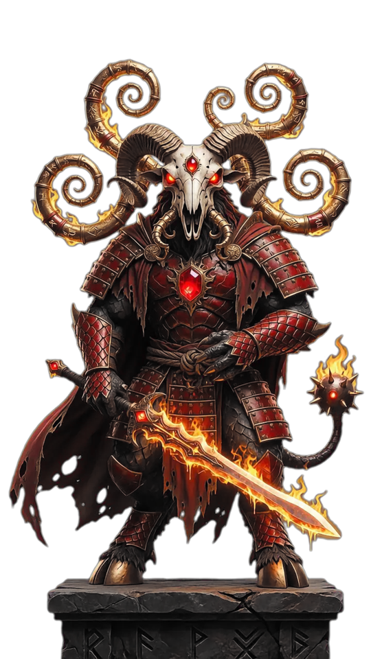
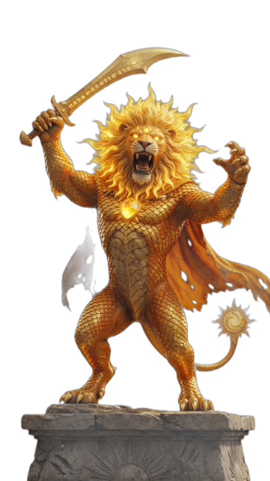
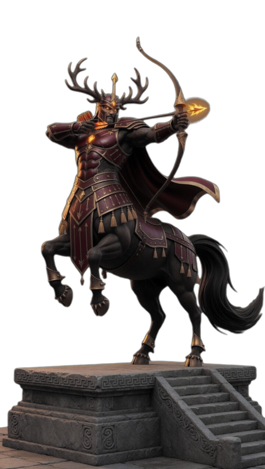
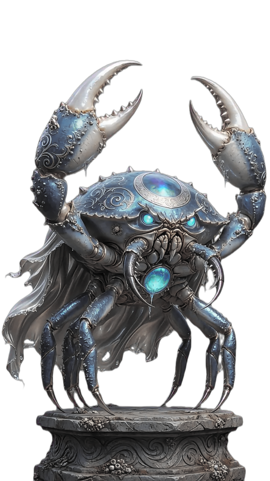
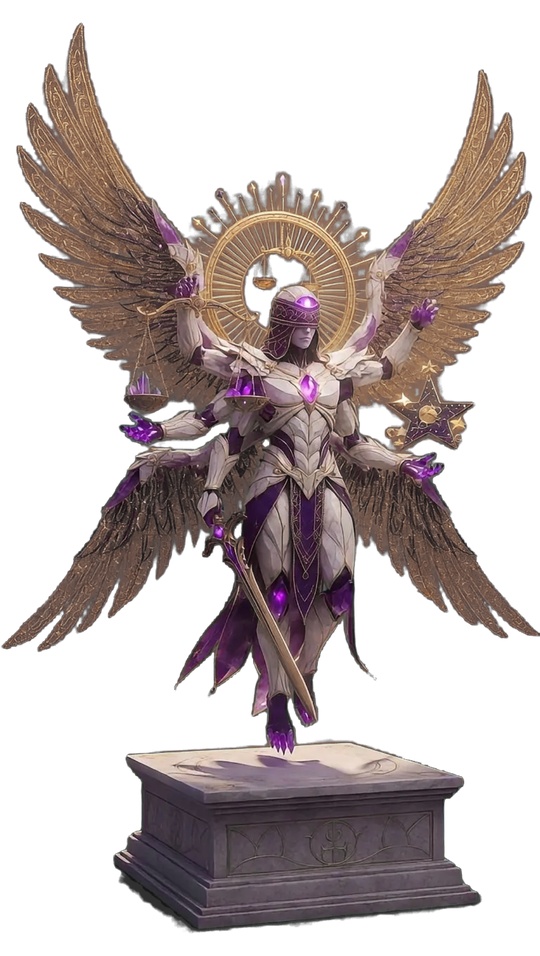
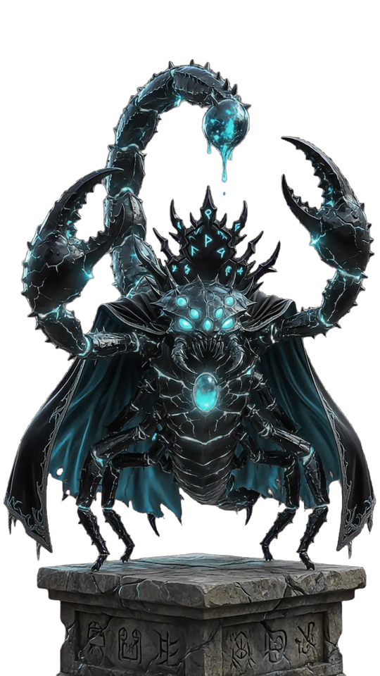
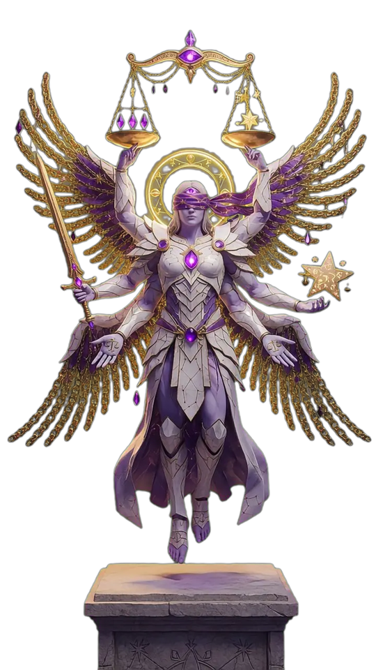
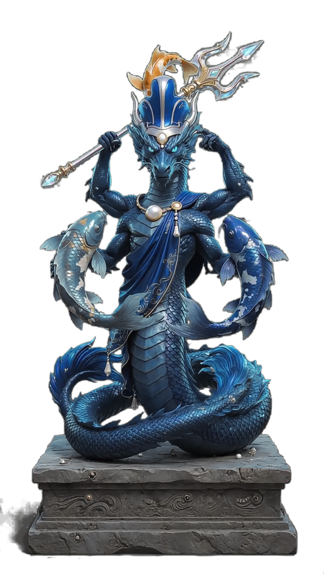
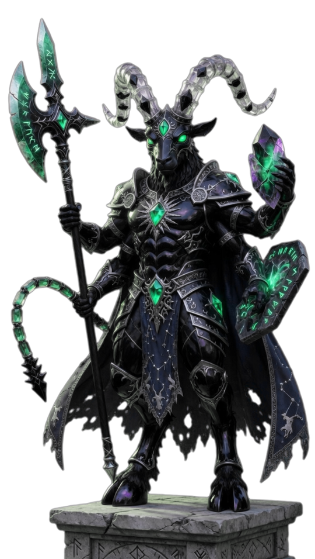
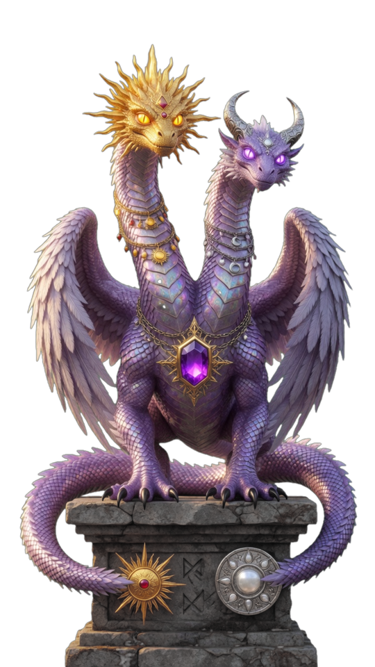
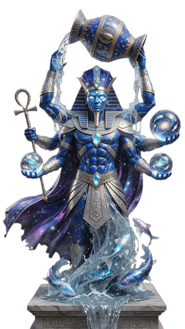
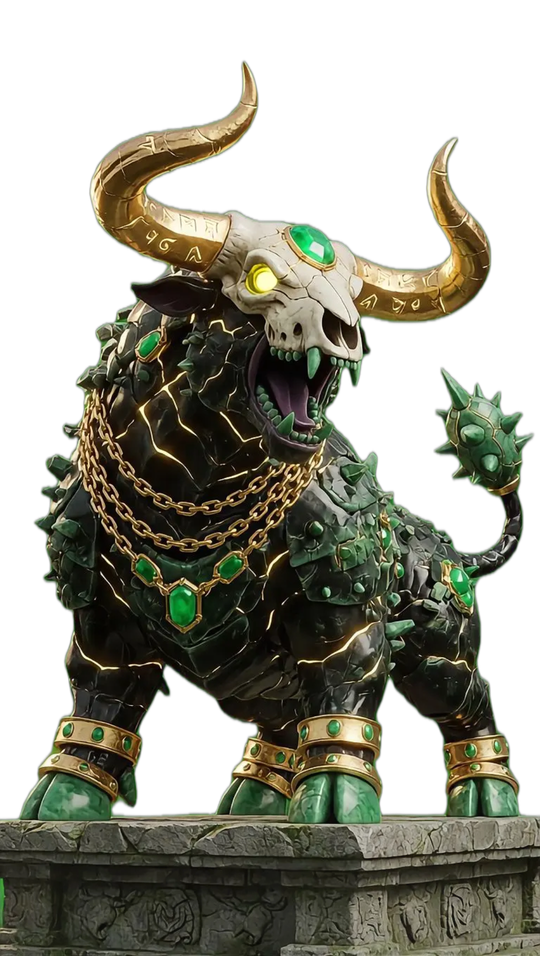
// NO. 02
Procesión Cósmica
desfile horizontal al pie del anillo
// NO. 03
Anillo Asimétrico · Tauro Heroico
tu dios masivo a un lado · 11 al otro
// NO. 04
Columnas del Cielo
6 dioses por lado · templo cósmico
// NO. 05